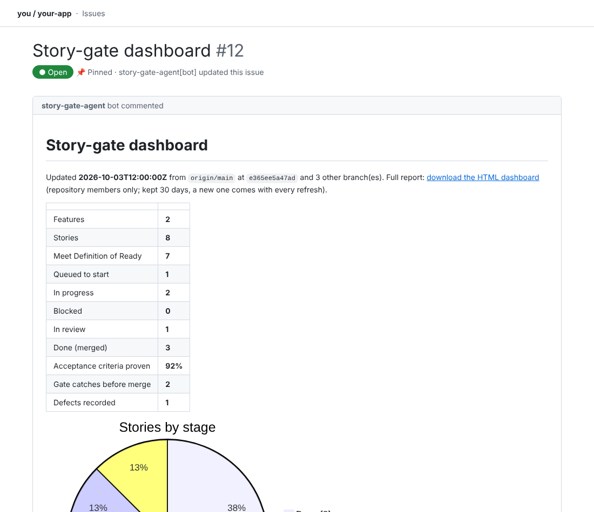
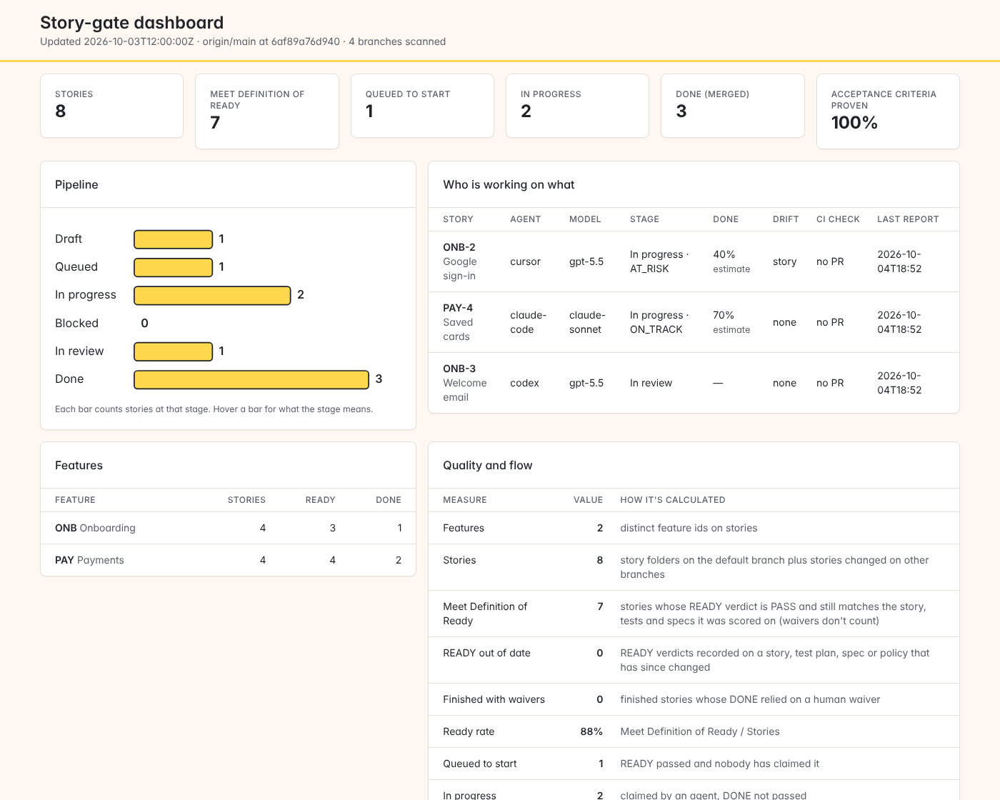

THE DASHBOARD · WHERE YOUR PROJECT STANDS
No new app to learn. It lives in your repository, so only people who can see the repository can open it. A downloaded report is a file anyone you send it to can read.
Open your repository → Issues → Story-gate dashboard at the top. It updates by itself.

Click download the HTML dashboard in the issue. The numbers below point here.

123The top numbers: stories ready to build, in progress, done, and how many acceptance criteria tests proved.
Each AI agent, its story, % done, and whether it's drifting from the spec. AT_RISK means look now.
"Queued to start" lists stories that passed READY and are waiting. Ask your AI: story-gate dashboard --open